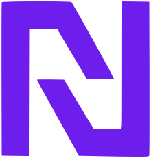

تفاوت فریلنسری و کارمندی
در فریلنسری آزادی بیشتری داریم اما در کارمندی امنیت شغلی بالاتری را تجربه خواهیم کرد.اما تفاوت اساسی را در ساعات و فشار کاری میتوان یافت.

نئوبلاگ،محلی برای تبادل اندیشهها،خواندن مطالب متنوع و شرکت در گفتگوهای جذاب و الهام بخش است.
در فریلنسری آزادی بیشتری داریم اما در کارمندی امنیت شغلی بالاتری را تجربه خواهیم کرد.اما تفاوت اساسی را در ساعات و فشار کاری میتوان یافت.
افراد با استمرار و دارای کوشش بسیار همواره توانسته اند خود را از این هیاهوی تکنولوژی و رشد چشمگیر فناوری در امان نگه دارند،اما از سویی از این دریای فرصت ها نیز صید های فوقالعادهای کنند.